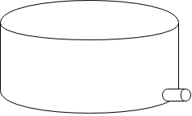
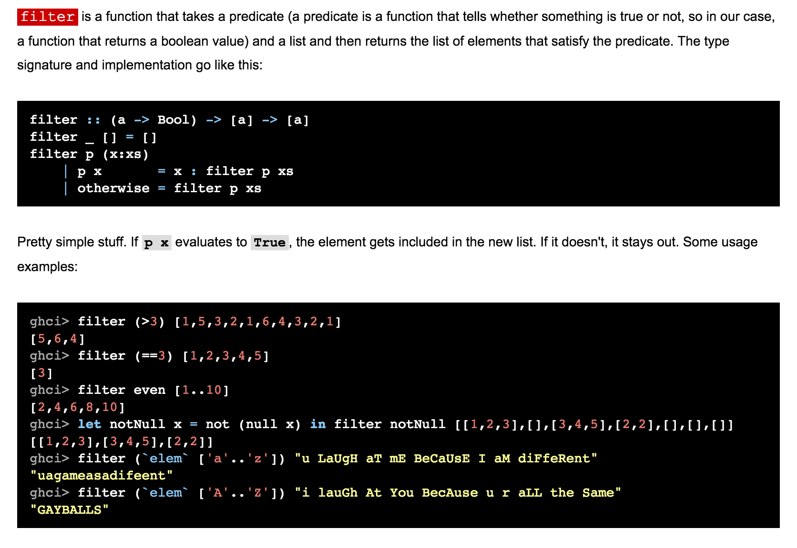
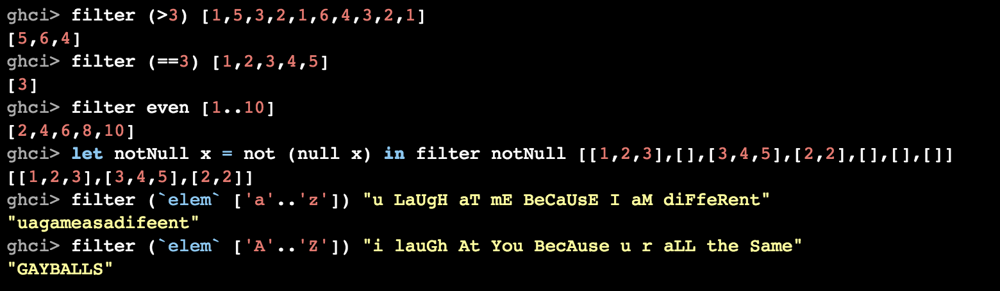

--- # Definitions ## safe your person, possessions, social presence etc. are **not** under direct threat -- ## When you feel safe... No action is necessary -- ## When you feel _un_-safe... Immediate corrective action is necessary (fight/flight/etc.) --- # Definitions ## comfortable environment is within tolerable parameters -- ##When you feel comfortable... No action is necessary -- ## When you feel *un*-comfortable Ignoring it is an option --- # Goals ## This talk may make some people feel _uncomfortable_. (Please follow up with me 1-to-1 or online.) ## This talk is not intended to make anyone feel _unsafe_. (Please follow up with organizers, per CoC.) --- # Use Your Privilege to Be a 10x Developer --- # 10x Developer The Mythical Man-Month: > a group of experienced programmers. Within just this group the ratios between best and worst performances averaged about 10:1 on productivity measurements and an amazing 5:1 on program speed and space measurements! --- # 10x Developer The Mythical Man-Month: > a group of experienced programmers. Within just this group the ratios between **best** and **worst** performances averaged about 10:1 on **productivity** measurements and an amazing 5:1 on program **speed** and **space** measurements! -- ## Caveats * not 'some developers are 10x better than average' * but 'developer output varies by project and individual and metric' --- # Our brains have bugs ## Benham Disk <img align="right" width="400px" src="./disc.png"> --- # Our brains have bugs ## Benham Disk (Spinning) <img align="right" width="400px" src="./disc-spinning.gif"> --- # Our brains have bugs ## Benham Disk (Done) <img align="right" width="400px" src="./disc.png"> --- # Fundamental Attribution Error ## What do you think about the people in this car? -- ### bad people ### bad situation -- ### both! --- # Fundamental Attribution Error ## We tend to believe ## others' bad actions are caused by their bad character ## our own bad actions are caused by our environment --- # 10x ## So ... instead of looking for 10x developers, we should be looking for 0.1x **environments** -- ## and destroying them --- background-image: url(morpheus.jpg) background-size: 100% 100%; --- # Definition ## What if your super power was an *inability* to see these 0.1x environments? -- ## Privilege We call that super power "privilege". --- # Analogy: Protocol for Communication over an Unreliable Network * peer 1 sends a message to peer 2 -- * peer 2 responds > I received a message and it appears you are hostile. -- * peer 1 responds > why are you bring so sensitive?! -- * peer 2 cuts peer 1 out of its trusted network --- # Personal Anecdote ??? in high school I was hanging out with my literary friends and I had just read an ironic story about Feminism and dating in Harper's magazine There was an anecdote in this story about how the heroine had to comfort a man about his inability to experience menstruation, and how that prevented him from being a true feminist [by the way the reason this is funny-not-funny is that often a problem behavior of an "aly" is to make the conversation about themselves] Anyway a woman that I didn't know very well said something to me, sort of a backhanded compliment and I responded with (what I intended to be) a sarcastic, self-deprecating reference to this character in the story ... and she ran out of the room crying. Ultimately a mutual friend was able to vouch for me and I had an opportunity to apologize and eventually we became friends --- # A Fluid Analogy  * a container with variable rate of inflow * maximum rate of outflow -- ## Three kinds of events * whole tank is overflowed in one transaction -- * fluid is added at < max outflow -- * fluid is added at > max outflow --- # Definition ## Microaggression > social exchanges in which a person says or does something (possibly accidentally or without intended malice) that belittles and alienates a member of a marginalized group. --- # Examples of microaggressions ### You should get a tattoo or something to prove you're nerdy enough to be here. -- ### You don't belong here, you need to prove yourself. -- ## We need to get a motherly person at [location] to take care of us. ## They're all too busy working out and looking pretty -- ### women should do domestic/women's work, and be ornamental -- they are not engineers or contributors --- # Examples of microaggressions Here's an excerpt from "learn you a haskell for great good" <!---->  -- <p> Are 'gay balls' intrinsically funny? Are they any funnier than straight balls? Why are we even talking about balls, in a programming language learning resource? --- # Definition ## Community ## A group of people who have _sacred values_ in common. --- # This Community's Values ## Be Kind ## Help People ## Care --- # Personal anecdote ??? So I decided I wanted to join this community, the javascript community. I decided to attend this weeklong conference. And then #gamergate happened. (And as an aside, I have an 11-year-old daughter who loves video games, especially Minecraft Pokemon, and I would like to live in a world where she could post a video online about that and be reasonably confident not to receive death or rape threats.) And I discovered that I couldn't follow or RT some people on twitter. I found out that I was on a blocklist. At first I thought this was some mistake, because although I could find the date that I was added to this list, I couldn't find a tweet in my timeline that made sense to have caused that. But um, "luckily" for me they keep records of these things and they were able to point out exactly what I had said. And this is where I would like to say, I recognized that I had done something unkind. But actually my first reaction was about how unfair it was, and how could these people who didn't even know me be so mean to me and not even take a joke, and all kinds of other embarrassing tantrum-y things. But I was lucky because I had decided that I would wait a full day between responses to this thread. And I realized that they had done a very reasonable thing. They had identified me as probably hostile, not tried to engage with me and change my mind (which probably wouldn't have worked at the time), and just marked me as a threat. And I was able to introspect and see that I had been rude, mean, unkind. And I felt embarrassed. And I felt ashamed. And so I apologized. And about a week later I was taken off the blocklist. And now I can RT people again, and fully interact with the community, and that's because some strangers were really, really kind to me. They identified something I had said that was hurtful; they didn't confront me, but gently informed me about it (by putting me on a block list); and they gave me a second chance. It was a priceless service, and they did it all for free. So as I said above I feel ashamed about this, but if you have curiosity about it you can find it pretty easily or you can just talk to me later, 1-to-1 or online. --- # Motivational Quote ## There's no limit to the amount of good you can accomplish if you don't care who gets the credit. -- ## - anonymous --- # How to be a 10x Developer ### Do 10x times as much work (increase by ~1000%) -- ### Help 10 people each double their output (increase by 100%) -- ### Help 100 people each increase output by 10% -- ### Help 1000 people each increase output by 1% --- # Responding to microaggressions ### You should get a tattoo or something to prove you're nerdy enough to be here. -- ### I responded > She doesn't need to do or haave anything to prove she belongs here. Being here is proof enough. --- # Responding to microaggressions ### We need to get a motherly person at [location] to take care of us. ### They're all too busy working out and looking pretty -- ###I responded > Maybe you need a fatherly person instead. My kids say I make pretty good pancakes, how about if I come around tomorrow morning? --- # Making Mistakes ### In speaking out, you will make mistakes ### But saying nothing can also be a mistake ??? Sometimes people feel like they can't or shouldn't contribute or respond because they might say the wrong thing. That's a good worry, and it probably will happen that you say the wrong thing. But conisder that saying nothing is probably also a wrong thing. --- # Fin ## Contact: @sammikes, smikes , cubane.com